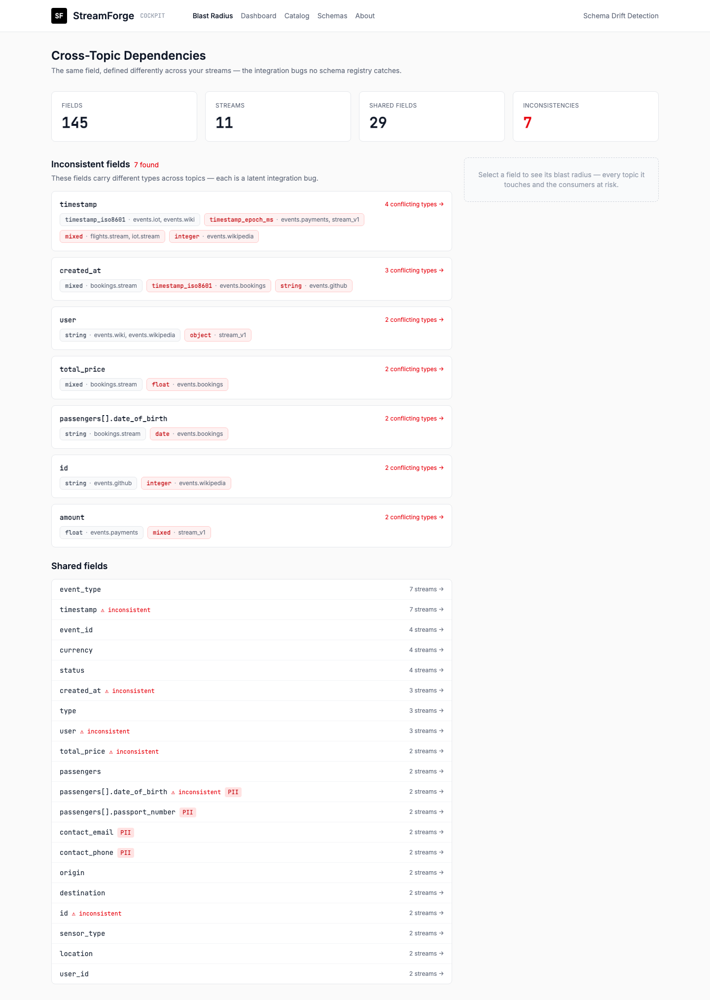
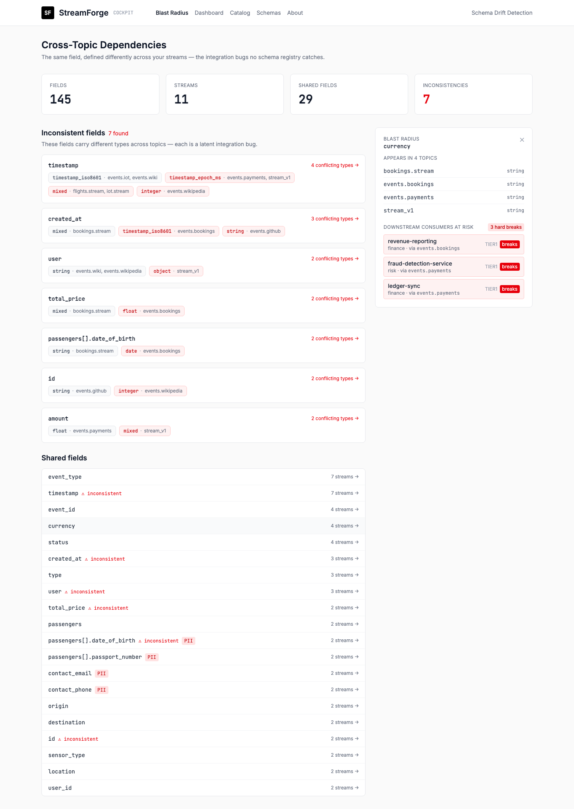

Hundreds of topics and queues — some built years ago, some from partners you don't control — and no one has the full picture. StreamForge reads the messages and maps every field, type and PII risk across all of them, read-only, with no producer changes. Then it watches them, so a breaking change can't slip through.
Hundreds of topics and queues spread across clusters and platforms. Some built years ago by people who've long since moved on. Some are external feeds from partners and vendors you don't control. Before you can govern any of it, someone burns weeks just working out what's there — and the picture is stale the moment it's written down.
Hundreds of topics and queues across multiple clusters and platforms — Kafka, SQS, RabbitMQ, IBM MQ. New ones appear without anyone telling the data team. No single inventory exists.
Decades-old MQ and mainframe streams. The team that built them has gone, the wiki is wrong, and the schema lives only in code you can't touch. Asking the producer to register a schema isn't an option.
Partner, vendor and downstream feeds where you can't add instrumentation and can't change the producer. All you have is the messages on the wire — and they change without warning.
StreamForge discovers all of it from the messages themselves — internal or external, modern or decades-old — read-only, with zero producer changes. One command and you have a documented, version-controlled schema and a PII map for every stream.
Discovered 214 streams across 4 clusters · 0 messages consumed
├── 168 internal topics (Kafka — dedicated consumer group)
├── 31 legacy queues (IBM MQ — browse mode, producers untouched)
├── 15 external partner feeds (read-only)
└── PII detected in 23 streams (passport, DOB, card, email)
Inventory written: schemas/ (214 files, ready for version control)
Discovery gives you the contract. Enforcing it is the same engine, no extra work: StreamForge watches
every stream and flags the moment a producer breaks it — a gate change retyping
gate
from "A23" to 23 blanks the boards and misroutes bags. You'd see it in the pull request, not from passengers.
StreamForge samples live traffic from your event streams and uses statistical inference to determine field types, presence rates, enum values, and data patterns. No producer instrumentation required. No schema registry adoption needed. Works with brownfield systems today.
The result: a complete, accurate schema for every stream — documented in version-controlled YAML, not locked in a proprietary format.
Discovered 147 streams across 3 clusters
├── 23 streams: schemas inferred, high confidence
├── 89 streams: schemas inferred, medium confidence
├── 35 streams: mixed event types detected (multi-schema)
└── PII detected in 12 streams (email, phone, card data)
Written: schemas/ (147 files, ready for version control)Once schemas are established, StreamForge monitors every stream continuously. Statistical tests run every 30 seconds — detecting type changes, presence rate shifts, new fields, removed fields, and PII exposure. Changes are classified by severity and routed accordingly.
Non-breaking changes: new optional fields, presence increases. Auto-documented. No human interrupted.
Compatibility risks: type changes, enum expansion, format shifts. Team notified. Review required.
High-impact changes: required fields removed, new PII detected. Deployment blocked. Escalation triggered.
StreamForge integrates into your deployment pipeline. Before any change reaches production, you know exactly what it affects. Breaking schema changes block deployment automatically. Impact analysis shows downstream dependencies. No more surprise production incidents.
streamforge validate --strict
Schema validation: payments-events
├── Field 'amount': type changed (integer → string) — BREAKING
├── Downstream consumers: billing-service, fraud-detection, analytics
└── Estimated blast radius: 3 services, 12 dashboards
Result: BLOCKED (exit 1)
Action: Review required before mergeStreamForge builds a live, cross-topic dependency map of your event estate: every field, every topic it appears in, and — uniquely — where the same field is modelled inconsistently across business units. Then it traces the blast radius of any change to the exact consumers and teams that break. This is the data map a Schema Registry can't give you, because it works on raw streams with no registration, across every line of business.

The homepage: every shared field, and the cross-topic conflicts that are latent integration bugs.
The same concept, modelled differently between teams. On a sample estate, timestamp
appears four ways (ISO-8601, epoch-ms, integer, mixed) across seven topics. These are the
integration bugs no schema registry or data catalog surfaces.
Click any field and StreamForge shows who breaks. Change currency and it
hard-breaks three consumers across two teams (Finance, Risk) in two different topics —
before you ship, not after.
Auto-discovers which services consume each topic from Kafka consumer-group metadata. Field-level dependencies are declared once in a contract file and enforced forever — so the map stays true as teams change.
The cross-topic graph is the contract map for your streaming estate: where data lives, where it disagrees, and who depends on it. Version-controlled and exportable — it complements your data catalog, it doesn't replace it.

Click a field → its blast radius: every topic it touches and the downstream consumers (and teams) at risk.
An airline's operational backbone is event-driven: flight movements, gate and stand changes, turnaround milestones, crew, baggage and DCS — flowing across Kafka and decades of IBM MQ teletype (MVT, LDM, ASM). It's also where a single silent change cascades through the whole operation. Here's what StreamForge does with that estate.
Map every field to every topic it appears in across all lines of business — one picture of where data lives, with type, presence and PII per topic.
Acme Airways · Ops
FlightOps, Ground Ops, the AODB, Crew and Baggage each publish a flight. StreamForge maps
flight_number, aircraft_registration (tail), gate/stand
and the off-/on-block times across all of them in one view — including the legacy movement feeds no one documented.
Flags where the same concept is modelled differently between teams — the latent integration bugs no schema registry or catalog surfaces.
Acme Airways · Ops
gate is "A23" (string) in Gate Management but stand 23 (integer)
in the legacy allocator; estimated_off_block_time is UTC in the AODB and local-time in an
outstation feed. During a busy bank the boarding board shows the wrong gate. StreamForge catches it before it ships.
Sees which services actually read which fields, with real access counts — no manifest, no producer changes. It compounds every day it runs.
Acme Airways · Ops
Before Ground Ops changes the gate-change event's gate field, StreamForge shows it was read
8M times yesterday by the departure boards, 3M by the mobile app, plus baggage-routing,
ramp dispatch and catering. You can't quietly change it — and now you know exactly who to tell.
Change a field and instantly see every downstream service and team that breaks — before the pull request merges, not after the incident.
Acme Airways · Ops
FlightOps wants to change the type of estimated_off_block_time (EOBT). Blast radius: it breaks
slot management, crew rostering, turnaround prediction and the on-time-performance dashboard — four teams, surfaced before merge.
Passport, date-of-birth, loyalty and payment data tracked across every stream — answer "where does PII flow?" instantly, for audit and GDPR.
Acme Airways · Ops & Compliance
Where do special-assistance and APIS passport details flow? Instant answer:
passengers[].assistance_code and passport_number appear in DCS, the boarding feed
and the Border-Force/APIS stream — all flagged PII, with the services that read them and crew IDs in the roster feed.
Browse-mode, read-only inference on undocumented mainframe and IBM MQ streams — no producer changes, zero risk to delivery.
Acme Airways · Ops The AODB, DCS and IATA Type-B movement messages (MVT, LDM, ASM) on decades-old IBM MQ that nobody documented. StreamForge browses them read-only and produces a full schema + PII report in an afternoon — without touching the producers.
Block a breaking producer change in the pull request and route it to the consuming teams for sign-off — a type-checker for your event streams.
Acme Airways · Ops
A team adds a new flight_status value (DIVERTED_FUEL) to the movement event.
The CI gate fails the PR and routes it to the departure boards, the app and Ops Control (OCC) for sign-off before it can merge.
Statistical, FDR-controlled drift detection where every alert explains itself — the test, the p-value, the effect size — not a vague anomaly.
Acme Airways · Ops
A new outstation ground handler starts sending actual_time_of_arrival in local time instead of UTC.
StreamForge detects the shift (chi², p<0.0001), classifies it breaking, and shows the evidence — before it corrupts OTP and turnaround metrics.
Runs deterministic with no data leaving your network; the optional LLM can be self-hosted or disabled. Ships a benchmark that scores its own accuracy.
Acme Airways · Ops Passenger, crew and operational data never leaves Acme's network — deterministic mode, on-prem or disabled model. The benchmark shows exactly how accurate inference is (Schema F1 0.93, PII F1 0.86), reproducibly.
Most tools ask you to trust them. StreamForge ships a benchmark that scores its own inference and drift detection against hand-labeled data — so you can see exactly how accurate it is, and it's reproducible (same input, same result, every run).
Runs fully deterministic with no data leaving your VPC — the LLM is optional enrichment, can be self-hosted, or disabled entirely. Statistical inference, FDR-controlled drift, and a full audit trail of every decision.
StreamForge never consumes messages from your queues. We use platform-native read-only mechanisms:
Result: Zero impact on message delivery. Zero risk to production consumers.
Schema inference uses distribution analysis, not guesswork. For each field, we compute:
Confidence scores are computed per-field. Low-confidence inferences are flagged for human review.
For ambiguous fields where statistical inference is insufficient, StreamForge uses LLM analysis to understand semantic meaning. Critical: Your actual data never reaches the LLM.
Pattern matching + heuristics identify potential PII fields locally. No external calls.
Before any LLM call, field values are replaced with synthetic examples that preserve structure but contain no real data.
"john.doe@acme.com" → "user_1@example.com"
"4532-1234-5678-9012" → "XXXX-XXXX-XXXX-0000"
"192.168.1.100" → "10.0.0.1"
LLM receives only: field names, pseudonymized samples, and structural metadata. It returns semantic classifications (e.g., "this looks like a correlation ID" or "this appears to be a currency amount in minor units").
If LLM is unavailable or confidence is low, inference falls back to pure statistical methods. The system degrades gracefully — never blocks on external dependencies.
Data residency: LLM calls can be disabled entirely, routed to on-premise models, or restricted to specific providers. Pseudonymization is applied regardless of destination.
Continuous monitoring uses proven statistical tests with configurable sensitivity:
Default α=0.01 (1% false positive rate). Tunable per-stream for different sensitivity requirements.
Multi-layer detection ensures comprehensive PII coverage:
PII detection runs locally first. LLM is only consulted for ambiguous cases, always with pseudonymized data.
| Tool | What it does | What it doesn't do |
|---|---|---|
| Confluent Schema Registry | Stores and validates Avro/Protobuf/JSON schemas for Kafka. Enforces compatibility on produce. | Requires producers to register schemas manually. No inference. No discovery. Kafka-only. Doesn't work with existing undocumented streams. |
| AWS Glue Schema Registry | Schema storage for Kinesis and Kafka on AWS. Integrates with Glue ETL. | Manual registration only. No inference. No drift detection. AWS-only. Doesn't discover existing schemas. |
| Monte Carlo | Data observability for warehouses and lakes. ML-based anomaly detection on tables. | Focused on batch data in warehouses, not streaming. No schema inference for queues. No real-time drift detection for event streams. |
| Soda | Data quality testing with SQL-based checks. Runs scheduled validations on tables. | Batch-oriented. Requires writing checks manually. No streaming support. No schema inference. |
| Great Expectations | Data validation framework. Define expectations in code, run against DataFrames/tables. | Batch processing only. Manual expectation writing. No streaming. No automatic schema discovery. |
| Collibra / Atlan / Alation | Data catalogs. Metadata management, lineage tracking, governance workflows. | Metadata must be registered manually or via connectors. No real-time schema inference. No drift detection. Focused on documentation, not enforcement. |
| OpenMetadata | Open-source data catalog. Metadata ingestion from databases, dashboards, pipelines. | No streaming/queue connectors. No schema inference from message content. No drift detection. |
| Databricks Unity Catalog | Governance for Databricks lakehouse. Schema management for Delta tables. | Databricks ecosystem only. No support for Kafka, SQS, RabbitMQ, or other message brokers. |
No existing tool provides:
Schema registries require adoption. Data catalogs require manual registration. Observability tools focus on warehouses. Nothing discovers schemas from existing streams automatically.
Each mode can be run independently. Discovery doesn't require monitoring. Schema generation doesn't require continuous drift detection. Use what you need.
Run streamforge discover against your clusters. Get a complete inventory of every
queue and topic — with governance status, message rates, and identified gaps. No schema inference yet.
Pure reconnaissance.
Run streamforge init on critical streams. Statistical inference samples live traffic,
infers field types, detects PII, and generates version-controlled schema files. One-time operation
per stream — no ongoing monitoring.
Enable streamforge watch on production-critical streams. Drift detection runs every
30 seconds, classifies changes by severity, and integrates with your alerting and CI/CD pipelines.
Opt-in per stream.
A 30-minute demo on a single Kafka cluster or SQS queue. In one session you'll see: the schema of every topic auto-discovered, the cross-topic conflicts across your teams, the blast radius of a breaking change, and PII mapped across the estate — read-only, no producer changes, no data leaving your network.
Prefer to try it yourself first? Discovery is a one-time read-only scan — we'll send a sandbox.